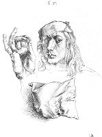
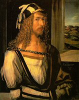

|
SELBSTBILDNIS IM PELZROCK (1500)
Gemälde auf Holz, 67 x 49 cm
Alte Pinakothek, München
∆
Kommentar
1500 malt Dürer eine Selbstdarstellung in einer hieratischen Pose, die bis zu diesem Zeitpunkt Königen und Christus vorbehalten war, dessen Gesichtszüge er nachahmt. Für Albrecht Dürer war dieses Bildnis möglicherweise eine wörtliche Auslegung der Lehre von der Imitation Jesu Christi, und ein
Beweis für seinen Glauben an den göttlichen Ursprung der Schaffenskraft des Künstlers als dem Nachschöpfer im Sinne Gottes.
∆
Selbstbildnisse
Während sich die Maler des
Mittelalters noch bescheiden als Silhouetten zeichnen und auf den
umfangreichen religiösen Kompositionen und Skizzen kaum zu erkennen
sind, beschäftigt sich Albrecht Dürer bereits mit der Darstellung
seiner eigenen Person. Auf einem Brustbild, das der Künstler im
Alter von 13 Jahren anfertigt und auf dem später die folgende
Anmerkung hinzugefügt wird – „1484,
als ich noch ein Kind war, habe ich mein Bild nach dem Spiegel
gezeichnet” -
versteckt das noch ungeschickte Kind die Hand mit dem
Stift hinter dem Ärmel. Auf einem anderen Selbstbildnis, das
ungefähr auf das Jahr 1491 datiert wird, führt der Künstler seine
Hand an sein Gesicht und scheint sich der Melancholie oder einem
physischen Leiden hinzugeben. Eine in der Bremer Kunsthalle
ausgestellte Tafel zeigt Dürer mit nacktem Oberkörper und folgender
Anmerkung „Ich
habe Schmerzen dort, wo mein Finger auf einen gelben Flecken
weist”,
und eine Zeichnung (1500-1505), die im Weimarer Schlossmuseum
zu sehen ist, stellt den Maler in voller Größe und fast nackt dar,
einziger Präzendenzfall in der Kunstgeschichte bis zum 20.
Jahrhundert. Neben diesen außergewöhnlichen Studien findet
sich eine große Anzahl weiterer Portraits. Auf einem von
ihnen, das 1493 geschaffen wurde und als eines der ersten autonomen
Selbstbildnisse der deutschen Malerei gilt, ist folgende Inschrift
zu lesen: „Myn
Sach die gat Als es oben schtat”, womit
der Künstler zugibt, dass sein Schicksal in den Händen Gottes
liegt. In einem 1498 gemalten Portrait dagegen kommt das Gefühl
der Überlegenheit des Künstlers als unabhängiger und stolzer Mensch
zum Ausdruck: „So
malte ich mich selbst im Alter von sechsundzwanzig Jahren.” Für das frontale Selbstbildnis aus dem Jahr 1500 verwendet Dürer ein Schema, das bislang der Darstellung Jesu Christi vorbehalten war. Der Maler identifiziert sich aufgrund seines Talents mit dem Schöpfer, und trägt gleichzeitig ein Kreuz wie sein Sohn. Auf den folgenden Bildern mischt sich der Maler unter die dargestellten Personen: auf dem Rosenkranzfest, der Marter der zehntausend Christen, dem Heller-Altar und
der Anbetung der Heiligen Dreifaltigkeit hält er ein Blatt Papier oder ein Schild mit seiner Unterschrift. Damit wird Dürer Teil seines Werks.
|

Studie für ein Selbstbildnis (1493)
Auf einer Federskizze, die
Dürer auf seiner ersten Reise in Deutschland anfertigt, hat sich der Künstler nach seinem Bild mit einem aufmerksamen Blick im Spiegel dargestellt. Seine feingliedrige Hand ist ans Gesicht geführt, als ob das Spiegelbild mit der Realität verglichen werden soll. Darunter befindet sich ein Kissen und auf der Rückseite des Blatts befinden sich weitere Kissen: es handelt sich dabei zweifelsohne um eine technische Studie, um die Konturen eines Gegenstands durch mehr oder weniger dichte Schraffuren zu verwischen.
(Metropolitan Museum of Art, New York)
|
|

Selbstbildnis (1498)
Der Gesichtsausdruck
entsteht durch ein nuancenreiches Spiel von Licht und Schatten; Dürer ist siebenundzwanzig Jahre alt. Die Raffinesse der Kleidung scheint übertrieben, die steife Haltung und ein beinahe selbstgefälliger Blick lassen erahnen, dass sich der Künstler seines Erfolgs voll und ganz bewusst ist.
(Museo del Prado, Madrid)
|
∆
Links
Website der Alten Pinakothek in München:
http://www.pinakothek.de/alte-pinakothek/
Website des Metropolitan Museum in New York:
http://www.metmuseum.org/home.asp
Website des Museo Nacional del Prado in Madrid:
http://museoprado.mcu.es/ihome.html
∆
|